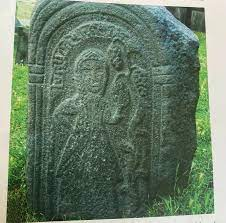
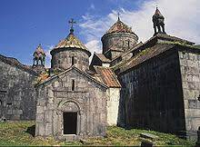

Խոսրովանույշ, Բագրատունյաց Հայաստանի հինգերորդ թագուհին, հայոց թագավոր Աշոտ Ողորմածի (953-977) կինը։ Խոսրովանույշը հայտնի է իր Հաղպատում և Սանահինում կառուցած վանքերով, որոնք գտնվում են ՀՀ Լոռու մարզում և ընդգրկված են ՅՈՒՆԵՍԿՕ-ի հայաստանյան ժառանգության ցանկում։
Կենսագրություն
Թագուհու նախնիների և տոհմի մասին տեղեկությունները քիչ են, սակայն զավակների և թոռների անունները պահպանվել են։ Ունեցել է 3 որդի՝ Սմբատ, Գագիկ և Գուրգեն։ Սմբատը ժառանգել է հոր գահը և դարձել հայոց թագավոր (977-990), ում հաջորդել է Գագիկը (990-1020)։ Գուրգենը առանձին թագավորական ճյուղ է հիմնադրել Լոռիում (Կյուրիկյաններ), դարձել Լոռու թագավոր, ապա իր տոհմի իշխանությունը հաստատվել է Տավուշում, Գարդմանում, Փառիսոսում, Կախեթի մարզում։

Գործունեություն
Աշոտ Ողորմածի (953-977) գահակալության 14-րդ տարում՝ 966 թվականին, Խոսրովանույշ թագուհին կառուցել է տալիս Սանահինի վանքը, ապա՝ 976 թվականին՝ Հաղպատավանքը[1]։ Դրանք միջնադարում դարձել են գիտաուսումնական կենտրոններ, Սանահինում բացվել են համալսարան ու մատենադարան։ Ավելի ուշ, Հաղպատի դպրոցի հիման վրա, կառուցվել է Հաղպատի գրադարանը ու մատենադարանը։ Խոսրովանույշ թագուհին Սանահինի վանքը կառուցել է Սմբատի ու Գուրգենի արևշատության համար[2]։ Այն հետագայում դարձել է Լոռու թագավորության եկեղեցական թեմի աթոռանիստը։
